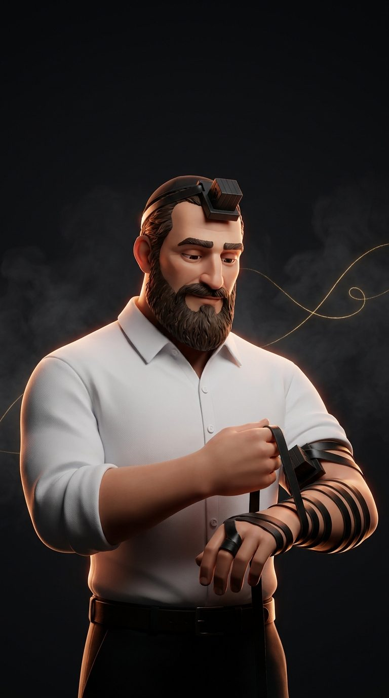

הסידור שלי
קשר
תפילין · שיר של יום · הלכה · מנטרות
מקוצר
תפילין, שמע, אשרי, שיר של יום, הלכה ומנטרה
מלא
כל הסדר, תהילים, איגרת הרמב"ן ומנטרות
התחל את הבוקר
0
ימים שסיימת
0
ימים ברצף
הכל במקום אחד
הגדרות תצוגה
שמור הכל לאופליין
נוסח עדות המזרח, סידור ספריא. הלכה יומית מקיצור שולחן ערוך. תהילים ואיגרת הרמב"ן מספריא. עיצוב ודמות: Gemini.
✕
Aא
הקודם
הבא
תצוגה
גודל אותיות
ריווח
ניקוד
עם
בלי
ערכה
לילה
יום
מסך דלוק
כן
לא
ספרי מוסר בסדר היום
סגור